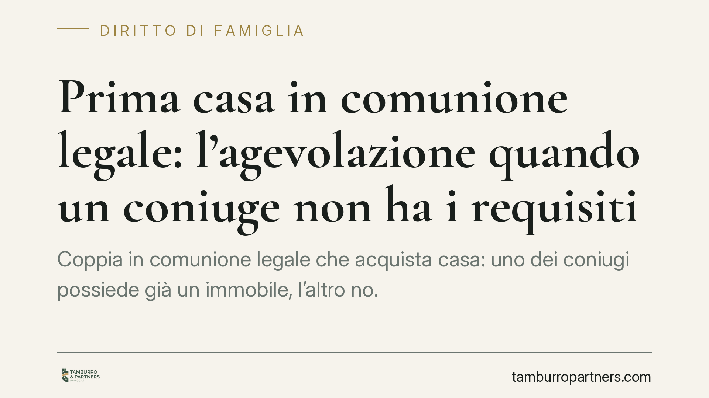

Prima casa in comunione legale: l'agevolazione quando un coniuge non ha i requisiti
Coppia in comunione legale che acquista casa: uno dei coniugi possiede già un immobile, l'altro no. Spetta comunque l'agevolazione prima casa? La risposta non è scontata: convivono orientamenti diversi tra chi limita il beneficio alla quota del coniuge in regola e chi lo estende all'intero acquisto. Ricostruiamo il quadro e le conseguenze concrete.

Il caso tipico
Due coniugi in comunione legale acquistano un'abitazione. Uno dei due è già titolare di un'altra casa acquistata con l'agevolazione, oppure possiede un immobile nello stesso Comune. L'altro coniuge, invece, soddisfa pienamente i requisiti per il bonus prima casa.
La domanda è pratica e ricorrente: l'imposta di registro (o l'IVA) agevolata si applica all'intero acquisto, a metà, o non si applica affatto?
Inquadramento normativo
L'agevolazione prima casa è disciplinata dalla Nota II-bis all'art. 1 della Tariffa, Parte I, allegata al Dpr 131/1986 (Testo unico dell'imposta di registro). La norma richiede, tra l'altro, due condizioni distinte da tenere ben separate:
- una condizione locale: l'acquirente non deve essere titolare esclusivo o in comunione con il coniuge di diritti di proprietà, usufrutto, uso o abitazione su altra casa nel Comune in cui si trova l'immobile da acquistare;
- una condizione nazionale: l'acquirente non deve essere titolare, neppure per quote e anche in comunione legale, su tutto il territorio nazionale, di diritti su altra casa acquistata con la medesima agevolazione.
Il nodo giuridico ruota però attorno all'art. 177 c.c., che individua l'oggetto della comunione legale. La comunione legale è una comunione senza quote: entrambi i coniugi sono titolari dell'intero bene, non di due metà ideali. Questo dato tecnico è il cuore del problema, perché il ragionamento sulle "due quote del 50%" presuppone una divisione che, in comunione legale, giuridicamente non esiste durante il matrimonio.
Il contrasto giurisprudenziale
Proprio su questo punto la giurisprudenza non è del tutto pacifica.
Un primo orientamento, più risalente e valorizzato in alcune pronunce di legittimità (in questa direzione Cass. n. 14237/2000 e successive conformi), muove dalla natura della comunione legale come acquisto imputabile a entrambi i coniugi per l'intero, riconoscendo il beneficio sull'intero acquisto anche quando i requisiti sussistono in capo a un solo coniuge.
Un secondo orientamento, di segno più restrittivo, ricostruisce l'operazione in termini di acquisto pro quota: il beneficio spetterebbe solo per la parte riferibile al coniuge in regola, con imposta piena sulla restante metà.
Stante questa divergenza, presentare una delle due letture come definitivamente consolidata sarebbe scorretto. La scelta dell'orientamento applicabile va valutata caso per caso, tenendo conto della prassi dell'Agenzia delle Entrate e della giurisprudenza più recente sul singolo profilo (condizione locale o condizione nazionale) effettivamente in gioco.
Implicazioni pratiche
Per la coppia le conseguenze economiche sono rilevanti.
Se prevale la lettura estensiva, l'agevolazione copre l'intero acquisto: imposta di registro al 2% (o IVA al 4%) sull'intero valore.
Se prevale la lettura pro quota, l'agevolazione opera solo sulla metà riferibile al coniuge in regola, mentre sull'altra metà si applica l'imposta ordinaria. L'effetto è un aggravio significativo, spesso non messo in conto al momento del rogito.
A prescindere dall'orientamento, restano fermi i vincoli legati al beneficio: divieto di rivendita nei cinque anni (salvo riacquisto di altra prima casa entro un anno) e obbligo di trasferire la residenza nel Comune entro diciotto mesi. La violazione comporta decadenza dall'agevolazione, con recupero delle imposte e sanzioni.
Cosa fare in concreto
- Verificate la posizione di entrambi i coniugi prima del rogito: titolarità di altri immobili nel Comune (condizione locale) e immobili già acquistati con agevolazione ovunque in Italia (condizione nazionale).
- Distinguete i due requisiti: possono generare esiti diversi e vanno esaminati separatamente.
- Valutate con il notaio l'orientamento applicabile al vostro caso, chiedendo esplicitamente conto del rischio di ripresa a tassazione sulla quota del coniuge privo dei requisiti.
- Rispettate i vincoli post-acquisto: residenza entro diciotto mesi e cautela sulla rivendita nei cinque anni, per evitare la decadenza.
- Documentate le condizioni dichiarate in atto: sono la base di un'eventuale difesa in caso di contestazione dell'Agenzia delle Entrate.
Data la non univocità degli orientamenti, consigliamo di affrontare la valutazione prima dell'atto e non a contestazione già ricevuta.
---
*Contributo informativo a cura di Tamburro & Partners - Avv. Giuseppe Tamburro. Non costituisce parere legale.*
Ogni famiglia ha il suo equilibrio.
Separazione, divorzio, affidamento, assegno: se vuoi un confronto riservato su una specifica situazione, scrivi allo studio. Ti rispondiamo entro un giorno lavorativo.